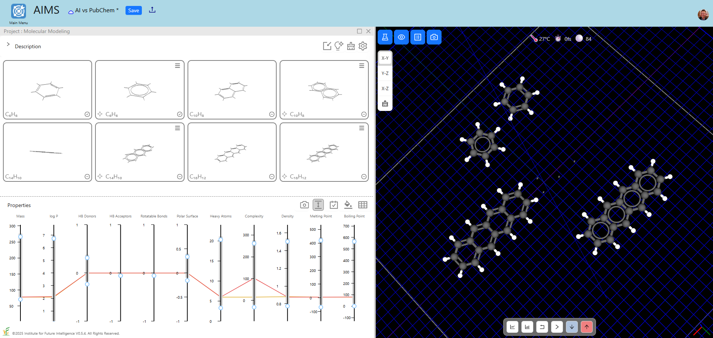
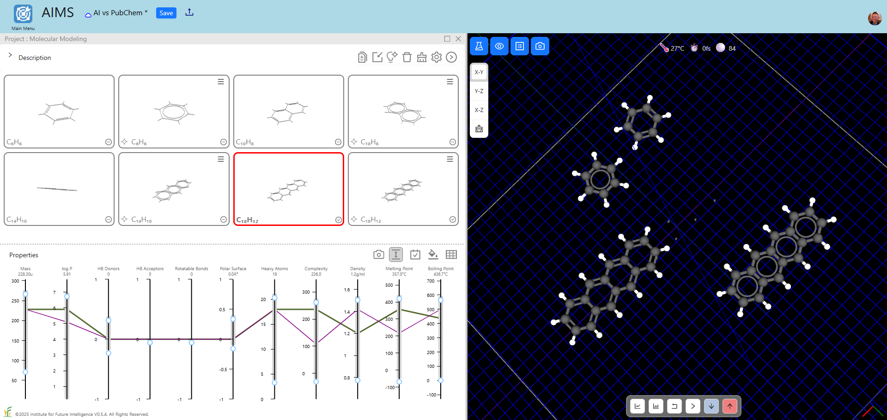

On the Reliability of AI-Generated Molecules and Their Properties
By Charles Xie ✉ and Xiaotong Ding ✉
Generative AI (GenAI) provides a new way to gather molecular information other than searching in databases of molecules such as PubChem. In this article, we compare the GenAI results of some molecules with the curated information in AIMS of those molecules based on data downloaded from PubChem. Our conclusion is that the generated structures and properties agree reasonably well with the PubChem data in these test cases overall, though some generated properties exhibit a larger deviation from the actual data. The GenAI model used to generate molecules in this article is based on OpenAI's o4-mini.
Our custom prompts are all very simple, such as "Give me a benzene molecule." Behind the scenes, AIMS adds additional prompts to ensure GenAI return the data it needs and understands. The AI memory is disabled in the Gallery Settings of AIMS so that each molecule is independently generated. The molecules for comparison in the Gallery are imported directly from the built-in database of AIMS, which contains hundreds of molecules and their properties collected from PubChem and other sources. One way to quickly tell which molecule is generated by AI and which is not is to see if there is a spark icon at the lower-left corner of the window in which the molecule is displayed. If a spark icon is there, that molecule is generated by AI.
Test case: Acenes
We select acenes as the first test case in this article. The live windows (i.e., windows in which you can interact directly with the molecules and their data) are provided below for you to explore on your own. One main difference is that the PubChem data adopts the Kekulé structure with alternating double and single bonds for the aromatic rings whereas the results from GenAI tend to represent the rings with a circle depicting the delocalized electrons in the molecular orbitals. The latter is a more accurate quantum mechnical view of chemical bonds in aromatic rings.
You can use the visual analytics supported in the Gallery to examine the differences between the generated chemical and physical properties and the actual data displayed in the parallel coordinate plot below the molecules. For example, the following screenshot shows that, after we select only the two benzene molecules in the Gallery, the parallel coordinate plot clearly reveals that the generated properties of benzene agrees with the actual data for all but one property ("complexity").

Screenshot: Select only the two benzene molecules in the Gallery
We have a similar degree of success with AI for naphthalene and anthracene, but are not as lucky when it comes to tetracene and higher acenes. It turns out that the generated properties of tetracene agree with the actual data for hydrogen bond donor and acceptor count, rotable bond count, and polar surface area (these are more predictable) and disagree to some extent for other properties such as logP, density, melting point, and boiling point (these are less predictable), as shown in the following screenshot. Similar problems exist for higher acenes. This is probably because there are fewer data for training AI in the case of higher acenes. To give AI some credit, the generated properties are not completely off the scale in most cases. For example, the melting point and boiling point of octacene generated by AI are 350°C and 650°C, respectively, compared with the actual data 298°C and 745°C.

Screenshot: Select only the two tetracene molecules in the Gallery
You can also drag the molecules from the Gallery to the Reaction Chamber on the right to have a side-by-side comparison of their structures in a larger workspace that is equipped with more analytical tools.
The following live window is the comparison between the GenAI results and the PubChem data for benzene (C₆H₆), naphthalene (C₁₀H₈), anthracene (C₁₄H₁₀), and tetracene (C₁₈H₁₂). While the bond lengths and angles of the generated molecules seem close to the actual data, one common glitch is that GenAI sometimes get the positions of a few hydrogen atoms wrong.
Live window above (view in full screen) — Chrome or Edge recommended
The following live window is the comparison between the GenAI results and the PubChem data for four higher acenes: pentacene (C₂₂H₁₄), hexacene (C₂₆H₁₆), heptacene (C₃₀H₁₈), and octacene (C₃₄H₂₀). Unlike the four acenes above, three of these four generated molecules do not have the correct type of aromatic ring bonding (represented by either the Kekulé structure or a circle) — all of their carbon atoms are connected by single bonds.
Live window above (view in full screen) — Chrome or Edge recommended
Test case: Hexachlorobenzene
To further investigate the reliability of AI for predicting the properties of the generated molecules, we choose hexachlorobenzene (C₆Cl₆) as another test case. The following live window is the comparison between the GenAI results and the PubChem data for hexachlorobenzene. We asked AI to create the molecule seven times (again, AI memory is disabled in this case so that the result can be independently created each time to avoid potential propagation of error).
Live window above (view in full screen) — Chrome or Edge recommended
Judging from the 3D views displayed in the Gallery, the generated structures seem to agree with the actual structure each time (with the exception of bond type). As the parallel coordinate plot may distort the view of difference due to the range settings, we export the numeric results of the properties and copy them below.
Name logP Complexity Density Melting Point Boiling Point Hexachlorobenzene 5.47 104 2.04 228.83 325 AI: 12xachlorobenzene 5.18 32.8 1.681 238 330 AI: 12xachlorobenzene 1 5.6 23.7 1.68 230 350 AI: 12xachlorobenzene 2 5.13 47.5 1.689 231 323 AI: 12xachlorobenzene 3 5.3 27.2 1.56 228 346 AI: 12xachlorobenzene 4 5.73 31.7 1.622 231 344 AI: 12xachlorobenzene 5 5.73 34.1 1.65 234 374 AI: 12xachlorobenzene 6 5.18 67 1.88 231.6 344.3
As you can see from the above list, the properties generated by AI are different each time. Despite this, all but one of them are pretty close to the actual data (the row in italics). As is with the case of acenes, we see the largest difference in the property "Complexity," presumably because the word is too overloaded.
Conclusion
The test cases chosen in this article involve relatively simple molecules that have been well-studied and well-documented in organic chemistry. Most of the molecular structures and properties generated by AI agree reasonably well with the PubChem data in these test cases. Further tests beyond these simple molecules are needed to establish the overall reliability of the GenAI approach.